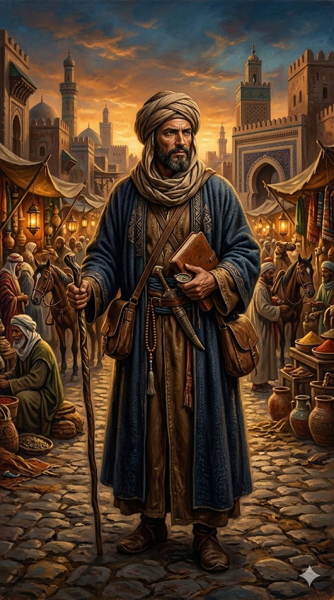

אבן בטוטה

לחץ על התמונה להגדלה
מקור ומשמעות השם המלא (אטימולוגיה)
שם פרטי ושם אב: מוחמד אבן עבדאללה
שמו המלא והרשמי בערבית הוא ארוך ומעיד רבות על ייחוסו ומוצאו: אַבּוּ עַבְּדַאללַּה מֻחַמַּד אִבְּן עַבְּדַאללַּה אַל-לַּוַּאתִי א-טַּנְגִ'י אִבְּן בַּטּוּטַה (أبو عبد الله محمد بن عبد الله اللواتي الطنجي بن بطوطة).
פירוש חלקי השם:
- אבו עבדאללה: כינוי כבוד (קוניה - Kunya) שמשמעותו "אביו של עבדאללה". זה היה נהוג בתרבות הערבית גם אם לא היה לו עדיין בן בשם זה בעת שקיבל את השם.
- מוחמד: שמו הפרטי, שמו של נביא האסלאם ("המהולל").
- אבן עבדאללה: בנו של עבדאללה (שם אביו).
- אל-לוואתי: מעיד על השתייכותו לשבט ה"לוואתה" הברברי, שבט גדול ומוכר בצפון אפריקה.
- א-טנג'י: מעיד על עיר הולדתו, העיר טנג'יר (Tangier) שבמרוקו של ימינו.
שם המשפחה/הכינוי: אבן בטוטה (Ibn Battuta)
זהו השם בו הוא מוכר בעולם, אך מבחינה בלשנית מדובר בכינוי משפחתי (Laqab).
פירוש: הקידומת "אבן" פירושה "בן". המילה "בטוטה" היא ככל הנראה כינוי שדבק במשפחתו, ופירוש משוער אחד בלהגים צפון-אפריקאיים הוא "הברווזון" או מתייחס לאדם נמוך קומה ובעל מבנה גוף מעט עגלגל. עם זאת, בזכות מסעותיו, השם "אבן בטוטה" הפך במדינות ערב לשם נרדף ל"נוסע גדול" או הרפתקן, בדומה ל"מרקו פולו" במערב.
ילדות ורקע מוקדם
אבן בטוטה נולד בעיר טנג'יר (השוכנת לחופי מצר גיברלטר בצפון מרוקו של ימינו) למשפחה מכובדת ומשכילה, השייכת לשושלת של שופטים אסלאמיים (קאדים) ממוצא ברברי.
חינוכו היה דתי-משפטי מחמיר. מגיל צעיר הוא למד בבתי ספר מוסלמיים מסורתיים (מדרסות) בעיר הולדתו, שם התעמק בלימוד הקוראן, ההלכה האסלאמית (שריעה) ומשפט (לפי האסכולה המאלכית שהייתה נפוצה בצפון אפריקה). הייחוס המשפחתי שלו והכשרתו המשפטית העמוקה היו הנכסים החשובים ביותר שלו: הם אלה שאפשרו לו להתקבל בחצרות שליטים ולמצוא תעסוקה כקאדי (שופט) לאורך כל שנות מסעותיו ברחבי העולם האסלאמי.
אידאולוגיה, מניעים ותפיסת עולם
המניע הראשוני למסעו של אבן בטוטה הצעיר (בגיל 21) היה דתי ורוחני לחלוטין. הוא לא יצא לגלות ארצות חדשות, לפתוח נתיבי סחר או לכבוש טריטוריות, אלא לקיים את מצוות החג' (Hajj) – העלייה לרגל לעיר מכה, שהיא אחת מחמשת עמודי האסלאם.
עם זאת, במהלך המסע מניעיו השתנו. העולם האסלאמי במאה ה-14 (דאר אל-אסלאם) היה עצום – הוא השתרע מספרד במערב ועד הודו במזרח. למרות הפיצול הפוליטי לישויות שונות, זו הייתה אימפריה תרבותית מאוחדת תחת דת אחת ושפה משותפת (ערבית).
תפיסת עולמו הפכה לתשוקה חסרת מעצורים לנודד ולחקור (Rihla). הוא הבטיח לעצמו "לעולם לא לנסוע באותה דרך פעמיים, במידת האפשר". הוא הונע מסקרנות עמוקה להכיר חכמי דת (עולמאא'), שליטים ותרבויות בתוך המרחב האסלאמי ומחוצה לו. המעמד ההלכתי שלו אפשר לו להשתלב באליטות המקומיות בכל מקום אליו הגיע, ולתפוס את המסע כמסע לימודי מתמשך של איש דת המכיר את העולם המגוון שברא האל.
נסיבות היסטוריות למסע
המסע של אבן בטוטה התאפשר בזכות מצב היסטורי ופוליטי ייחודי במאה ה-14. זהו עידן ה"פאקס מונגוליקה" (השלום המונגולי) במזרח ובמרכז אסיה, אשר אבטח את דרכי הסחר ואפשר תנועה יחסית בטוחה על פני יבשות שלמות. במקביל, בעולם האסלאמי (דאר אל-אסלאם) התקיימה תשתית מוסדית אדירה של רשתות סחר, מדרסות (בתי מדרש), ח'אנים (אכסניות דרכים), ומסדרים סופיים, שהעניקו לנוסע מוסלמי מלומד כמו אבן בטוטה אירוח, ביטחון, ותעסוקה לאורך כל הדרך. ההגמוניה התרבותית של האסלאם מהודו ועד מרוקו, יחד עם הביקוש לשופטים (קאדים) ולמלומדים, היוו את הקרקע הפורייה שאפשרה למסע בסדר גודל כזה להתרחש.
המסע העצום (1325-1354): 120,000 קילומטרים
מסעו של אבן בטוטה הוא ללא ספק המסע היבשתי והימי הנרחב ביותר בהיסטוריה שלפני העידן המודרני, העולה משמעותית בהיקפו אפילו על זה של מרקו פולו. מסע שהחל כעלייה לרגל פשוטה למכה, הפך למסע נדודים של כ-29 שנים לאורך כמאה ועשרים אלף קילומטרים (לשם השוואה: הקפת כדור הארץ בקו המשווה היא כ-40,000 ק"מ).
מסלולו כלל:
- צפון אפריקה והמזרח התיכון: יציאה ממרוקו דרך אלג'יריה, תוניסיה, אלכסנדריה וקהיר. ממצרים ניסה לרדת בים האדום, אך חזר לסוריה, ביקר בירושלים ודמשק, והגיע למכה כדי לקיים את מצוות החג'.
- פרס, עיראק ומזרח אפריקה: לאחר החג', המשיך לעיראק ולפרס (תחת שלטון מונגולי אילח'אני). בהמשך סייר לאורך החוף המזרחי של אפריקה ("חוף הסוואהילי") עד מוגדישו וקילווה שבדרום מזרח אפריקה.
- הודו והמלדיביים: הוא המשיך לאנטוליה, חצה את הים השחור ואת הערבות לחצרו של אוזבק חאן (מנהיג אורדת הזהב). משם, חצה את הרי ההינדו-כוש והגיע להודו. הוא שירת מספר שנים כקאדי בכיר (שופט) בחצרו של סולטאן דלהי האכזר והבלתי צפוי, מוחמד בן תוגלאק. כשחשש לחייו, ברח והפך לשופט בכיר באיים המלדיביים (שם גם התחתן עם בנות משפחת המלוכה המקומית).
- סין והחזרה הביתה: מהמלדיביים המשיך לסרי לנקה, סומטרה (אינדונזיה של ימינו), ומשם, ככל הנראה, הגיע עד למחוז פוג'יין ולעיר גואנגג'ואו בסין של שושלת יואן המונגולית. לאחר מכן, החל במסע ארוך חזרה עד ששב למרוקו, רק כדי לגלות שאימו נפטרה במגפת הדבר (המוות השחור) ושמרבית בני משפחתו אינם. לבסוף, יצא לעוד שני מסעות קטנים יחסית: לאנדלוסיה (ספרד המוסלמית) ולאימפריית מאלי במערב אפריקה (מעבר לסהרה).
גילויים מרכזיים והשפעותיהם ("הריחלה")
מהות הגילויים: בדומה למרקו פולו, אבן בטוטה לא גילה ארצות שהיו בלתי מיושבות או בלתי ידועות למקומיים. ה"גילוי" שלו היה ביצירת התמונה הפנורמית הגדולה והמפורטת ביותר של החיים, התרבות והגיאוגרפיה בימי הביניים. הוא גילה לעולם האסלאמי והמערבי את קיומן, עושרן ומורכבותן של אימפריות רחוקות – כמו אימפריית מאלי באפריקה וסולטנות דלהי בהודו. הוא חיבר בין קצוות עולם שללא התיעוד שלו נראו מנותקים לחלוטין. הוא תיעד מנהגים משפטיים, מסורות של קבוצות מיעוט, הליכי סחר, פוליטיקה של חצרות סולטאנים, וכמובן, את החיים היום-יומיים של אנשים פשוטים בעשרות מדינות.
השפעות מרכזיות:
- שימור היסטורי וגיאוגרפי: הריחלה הפכה למקור הבלעדי כמעט להכרת ההיסטוריה של מזרח אפריקה (חוף הסוואהילי) ומערב אפריקה (אימפריית מאלי) במאה ה-14.
- אנתרופולוגיה מוקדמת: התיעוד המדויק של מבני כוח, מעמד האישה בחברות השונות, ומנהגי פולחן, שימש דורות של חוקרים סוציולוגיים ואנתרופולוגים.
- השפעה תרבותית: אבן בטוטה הפך לסמל של נדודים וסקרנות בעולם האסלאמי ובעולם כולו, והוכיח את כוחה של רשת סחר ותרבות גלובלית טרם העידן המודרני.
החשיבות ההיסטורית העצומה:
הריחלה של אבן בטוטה נחשבת לאחד המסמכים החשובים והמקיפים ביותר ללימוד ההיסטוריה, הגיאוגרפיה והאנתרופולוגיה של המאה ה-14, ובפרט של העולם האסלאמי.
בעוד מרקו פולו כתב כסוחר חיצוני זר המדווח על "פלאים" עבור קהל אירופאי מסוקרן, אבן בטוטה כתב כגורם פנימי (Insider) – כשופט וכמלומד שחי, עבד, נישא והקים משפחות בחברות השונות שעליהן כתב (אף כי חלק מהביקורת כלפיו נובעת מחוסר סובלנותו כלפי מנהגים שלא תאמו במדויק את ההלכה האסלאמית). התיעוד שלו על אימפריית מאלי באפריקה ועל אימפריית הזהב באסיה הוא לעיתים התיעוד הכתוב הכמעט-יחיד ששרד מאותה תקופה מנקודת מבט אישית, דבר ההופך אותו לאוצר בלום עבור חוקרי היסטוריה מודרניים.
מקורות וביבליוגרפיה (אימות מחקר)
- "הריחלה" (Rihla): מקור הראשוני (Primary Source) שנכתב על ידי אבן ג'וזאי מפיו של אבן בטוטה. זהו הטקסט המכונן המספק את מרבית המידע הידוע לנו על חייו ומסלולו. התרגום המלא לאנגלית נערך על ידי פרופ' המילטון א.ר. גיב (H.A.R. Gibb) בהוצאת אגודת האקלוט (Hakluyt Society).
- מחקר מודרני מקיף: Dunn, Ross E. (1986). The Adventures of Ibn Battuta: A Muslim Traveler of the 14th Century. University of California Press. (ספר הנחשב למחקר המקיף ביותר המציב את סיפורו של אבן בטוטה בתוך ההקשר הגיאופוליטי המורכב של המאה ה-14).
- אמינות גיאוגרפית היסטורית: היסטוריונים וקרטוגרפים אימתו חלקים ניכרים מתיאוריו על סמך מקורות מקבילים, אם כי קיימת הסכמה במחקר כי בחלק מהאזורים (במיוחד נסיעתו לעומק סין ונהר הוולגה) אבן בטוטה ייתכן שהסתמך על עדויות שמיעה של סוחרים אחרים ולא ביקר בהם בעצמו.